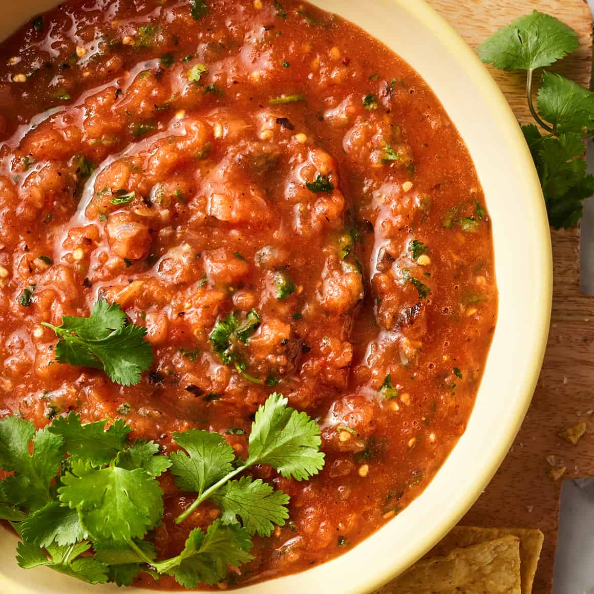

Salsa Roja

Description
A spicy fresh salsa, that relies on the flavour of the peppers and other veggies.
Ingredients
- 1 dried ancho pepper
- 6 Roma tomatoes
- 1/4 medium white onion, in two wedges
- 1 (or more) serrano peppers, stemmed
- 2 garlic cloves
- 2 tablespoons fresh lime juice
- 1 tablespoon avocado oil
- 1 teaspoon kosher salt
- 1/4 cup fresh cilantro
Steps
- Slice the stem off the ancho pepper, then slice vertically so it lays flat.
- Heat a cast-iron skillet over medium heat, and add the ancho pepper. Toast for 2 minutes per side until fragrant.
- Remove the ancho from heat and soak in a bowl with water.
- With the skillet still on medium heat, add the whole tomatoes, onion wedges, and seranno pepper(s).
- Cook the tomatoes and peppers until brown and blistered, and the onions until charred. Make sure to manually turn the vegetables.
- Drain and dry the chile, then add the chile along with the vegetables, garlic, lime juice, oil, and salt to a blender. Blend until smooth.
- Add the fresh cilantro and pulse until combined, then season with salt to taste.